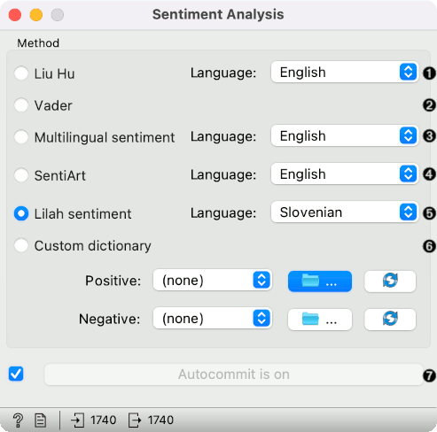

Sentiment Analysis
Predict sentiment from text.
Inputs
- Corpus: A collection of documents.
Outputs
- Corpus: A corpus with information on the sentiment of each document.
Sentiment Analysis predicts sentiment for each document in a corpus. It uses Liu Hu and Vader sentiment modules from NLTK. Both of them are lexicon-based. For Liu Hu, you can choose English or Slovenian version.

- Method:
- Liu Hu: lexicon-based sentiment analysis (supports English and Slovenian)
- Vader: lexicon- and rule-based sentiment analysis
- Produce a report.
- If Auto commit is on, sentiment-tagged corpus is communicated automatically. Alternatively press Commit.
Example
Sentiment Analysis can be used for constructing additional features with sentiment prediction from corpus. First, we load Election-2016-tweets.tab in Corpus. Then we connect Corpus to Sentiment Analysis. The widget will append 4 new features for Vader method: positive score, negative score, neutral score and compound (combined score).
We can observe new features in a Data Table, where we sorted the compound by score. Compound represents the total sentiment of a tweet, where -1 is the most negative and 1 the most positive.

Now let us visualize the data. We have some features we are currently not interested in, so we will remove them with Select Columns.

Then we will make our corpus a little smaller, so it will be easier to visualize. Pass the data to Data Sampler and retain a random 10% of the tweets.

Now pass the filtered corpus to Heat Map. Use Merge by k-means to merge tweets with the same polarity into one line. Then use Cluster by rows to create a clustered visualization where similar tweets are grouped together. Click on a cluster to select a group of tweets - we selected the negative cluster.

To observe the selected subset, pass the tweets to Corpus Viewer.


References
Hutto, C.J. and E. E. Gilbert (2014). VADER: A Parsimonious Rule-based Model for Sentiment Analysis of Social Media Text. Eighth International Conference on Weblogs and Social Media (ICWSM-14). Ann Arbor, MI, June 2014.
Hu, Minqing and Bing Liu (2004). Mining opinion features in customer reviews. In Proceedings of AAAI Conference on Artificial Intelligence, vol. 4, pp. 755–760. Available online.
Kadunc, Klemen and Marko Robnik-Šikonja (2016). Analiza mnenj s pomočjo strojnega učenja in slovenskega leksikona sentimenta. Conference on Language Technologies & Digital Humanities, Ljubljana (in Slovene). Available online.